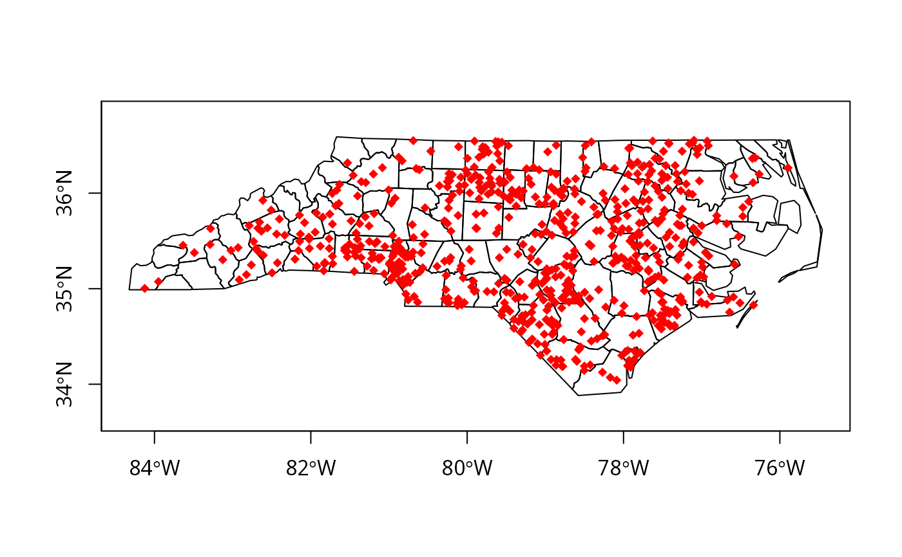
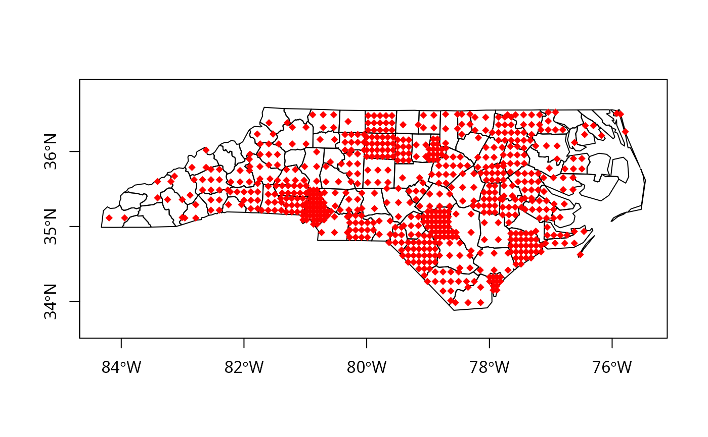

dotsInPolys.RdMake point coordinates for a dot density map
dotsInPolys(pl, x, f = "random", offset, compatible = FALSE)an object of class SpatialPolygons or SpatialPolygonsDataFrame
integer vector of counts of same length as pl for dots
type of sampling used to place points in polygons, either "random" or "regular"
for regular sampling only: the offset (position) of the regular
grid; if not set, c(0.5,0.5), that is the returned grid is
not random
what to return, if TRUE a a list of matrices of point coordinates, one matrix for each member of pl, if false a SpatialPointsDataFrame with polygon ID values
With f="random", the dots are placed in the polygon at random, f="regular" - in a grid pattern (number of dots not guaranteed to be the same as the count). When the polygon is made up of more than one part, the dots will be placed in proportion to the relative areas of the clockwise rings (anticlockwise are taken as holes). From maptools release 0.5-2, correction is made for holes in the placing of the dots, but depends on hole values being correctly set, which they often are not.
If compatible=TRUE, the function returns a list of matrices of point coordinates, one matrix for each member of pl. If x[i] is zero, the list element is NULL, and can be tested when plotting - see the examples. If compatible=FALSE (default), it returns a SpatialPointsDataFrame with polygon ID values as the only column in the data slot.
Waller and Gotway (2004) Applied Spatial Statistics for Public Health Data (Wiley, Hoboken, NJ) explicitly warn that care is needed in plotting and interpreting dot density maps (pp. 81-83)
nc_SP <- readShapePoly(system.file("shapes/sids.shp", package="maptools")[1],
proj4string=CRS("+proj=longlat +ellps=clrk66"))
#> Warning: shapelib support is provided by GDAL through the sf and terra packages among others
if (FALSE) {
pls <- slot(nc_SP, "polygons")
pls_new <- lapply(pls, checkPolygonsHoles)
nc_SP <- SpatialPolygonsDataFrame(SpatialPolygons(pls_new,
proj4string=CRS(proj4string(nc_SP))), data=as(nc_SP, "data.frame"))
}
try1 <- dotsInPolys(nc_SP, as.integer(nc_SP$SID74))
plot(nc_SP, axes=TRUE)
plot(try1, add=TRUE, pch=18, col="red")

try2 <- dotsInPolys(nc_SP, as.integer(nc_SP$SID74), f="regular")
plot(nc_SP, axes=TRUE)
plot(try2, add=TRUE, pch=18, col="red")
